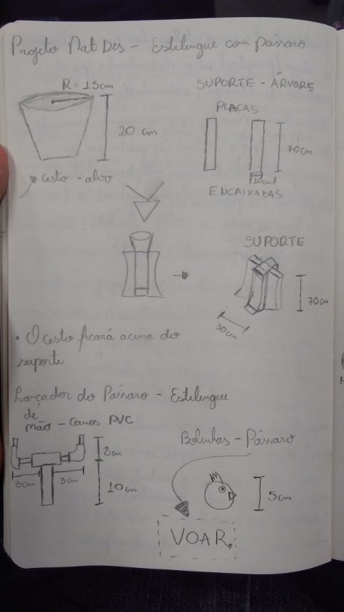

De Volta ao Ninho - 1° Semestre (2017.1)
Natureza do Design - Professor Roberto F.
Proposta:
Os alunos receberam a proposta da construção de um brinquedo infantil biomimetizado, ou seja, inspirado em algum animal. Esse exercício é abstrato dessa forma proprositalmente, a fim de que se utilizem os processos de Design discutidos em sala. Além disso, o FabLab do Insper seria fundamental para a realização do projeto, agregando também prática com equipamentos básicos de marcenaria, costura, fresadoras e impressoras 3D.
Objetivos:
O primeiro passo foi o levantamento de ideias por parte do grupo: o que fazer? Em qual animal nos inspirar e, em qual característica? O BrainStorming foi praticado ao longo de todo o projeto, pois o modelo não era definitivo enquanto não houvesse um modelo físico terminado. Iniciou-se o projeto com a escolha dos pássaros e sua habilidade de voo. A ideia base consistia num jogo em que os pássaros voariam. Após mais discussões, elaborou-se um jogo no qual as crianças deveriam devolver os pássaros a um ninho, o qual estaria no topo de uma árvore. Esse jogo assemelharia-se muito a um jogo de basquete, caso uma analogia entre passáro-bola e ninho-cesta fosse realizada. A questão chave do projeto era definir como seria realizado o voo do pássaro: ele seria lançado? com qual dispositivo? Ele seria arremessado? Quais as regras do lançamento?
Conteúdo trabalhado:
- O processo de BrainStorming (discussão de ideias)
- Sketching → rascunho livre de protótipos
- Operação dos equipamentos do FabLab Insper
- Validação com o usuário: receber e incorporar Feedbacks
Resultados:

Após validação com crianças, percebeu-se que a ideia inicial (a de a criança usar um lançador, similar a um estilingue) não proporcionava a melhor expericência possível para a criança ao longo do jogo. Percebeu-se também que, independente de os pássaros serem lançados ou arremessados, era necessário que apresentassem resistência, pois haveriam choques e quedas frequentemente. Além disso, a partir da validação de protótipos, percebeu-se uma dificuldade por parte das crianças para acertarem o alvo. A solução encontrada para esses e outros problemas de viabilidade do brinquedo baseou-se sempre nesse ciclo de idealização, prototipação, teste e validação, chegando em uma árvore com uma copa tendo função de "tabela", pássaros feitos de bexigas infláveis preenchidas com farinha e regras do jogo as quais o toranriam desafiador mas, ao mesmo tempo, dinâmico e agradável.
O modelo final foi levado até uma escola de educação infantil e lá, seria jogado pelos alunos, os quais dariam feedbacks de cada projeto aos professores da disciplina. De Volta ao Ninho foi um sucesso! Mais de 100 crianças chegaram a jogar, sem que qualquer pássaro estourasse. Os feedbacks revelaram que mais de 95% delas voltariam a jogar este jogo. De qualquer maneira, o principal resultado consistiu na aprendizagem na importância do usuário no desenvolvimento de qualquer produto e, que o processo de Design é um ciclo resumido em idealizar, prototipar e testar modelos.
Mais projetos de Design